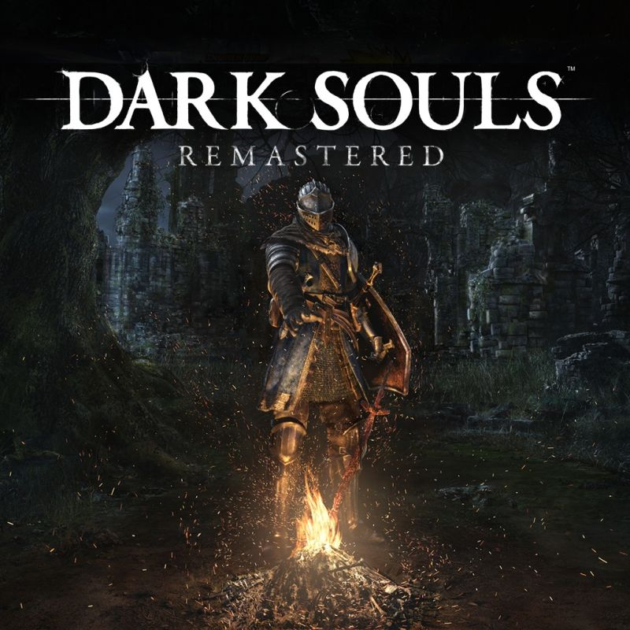

Dark Souls takes place in the fictional kingdom of Lordran. Players take on the role of an undead human character who has been chosen to go on a pilgrimage to discover the fate of the undead. The plot of Dark Souls is told mainly through descriptions of objects in the game, and dialogues with non-playable characters (NPCs). Players must gather clues in order to understand the story. Dark Souls earned great recognition for its grueling difficulty and relentless challenge. The game world is full of weapons, armor, and consumable items that aim to help the player during their journey.
On this night the good people barricade themselves in their houses and pray while characters known as hunters prowl the streets.Bloodborne tells the story of a night in the city of Yharnam a night of hunting. Everything indicates that something is very wrong in this city, a mysterious disease that takes hold of its people and turns them into beasts. And the beasts arehunted.

He is a shinobi who serves a young lord descended from an ancient lineage. Linked to his honor, he is a serene and reserved man, but also ruthless when it comes to completing his mission of revenge with whatever methods are necessary. ... The shinobi code is absolute, and guides him towards his revenge. Sekiro has already practically lost his life confronting the Ashina Clan leader when the story begins, losing the young lord he was supposed to protect. He has also lost his left arm and in exchange he has received a prosthesis that will favor his resurrection. The shinobi code is absolute, and guides him to his revenge.

Rise, Lightless, and may grace guide you to embrace the power of the Elden
Circle and rise as lord of the Circle in the Midlands. A vast, seamlessly connected world in which the
open territories will be filled with huge situations and dungeons with complex, three-dimensional
layouts.It will be the next evolution of dark souls.
Developed by FromSoftware, with worldbuilding by fantasy novelist George R. R. Martin.